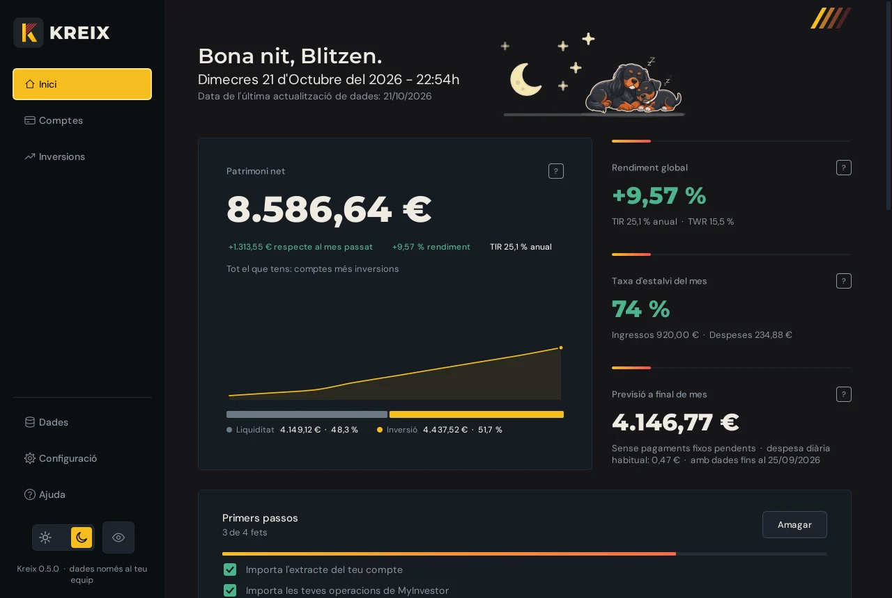
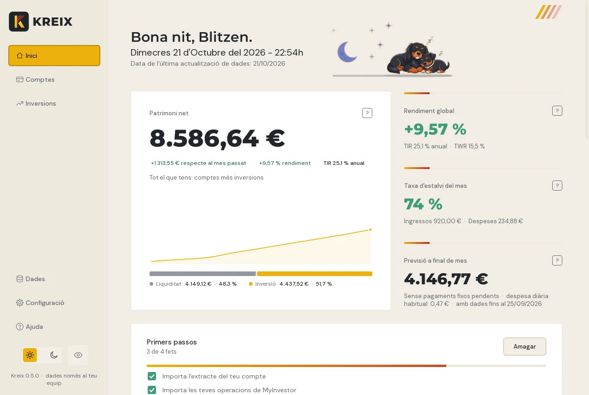
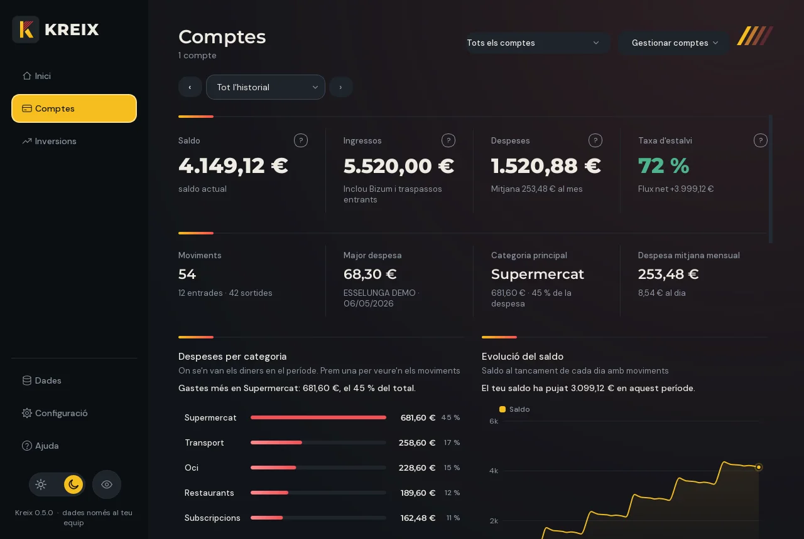
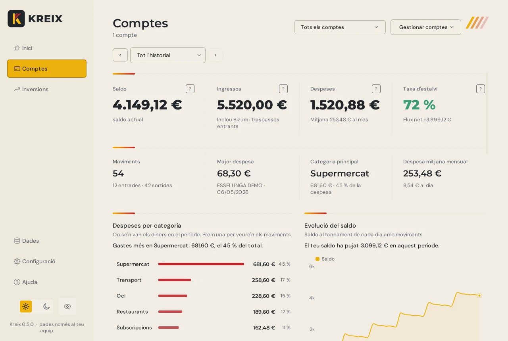
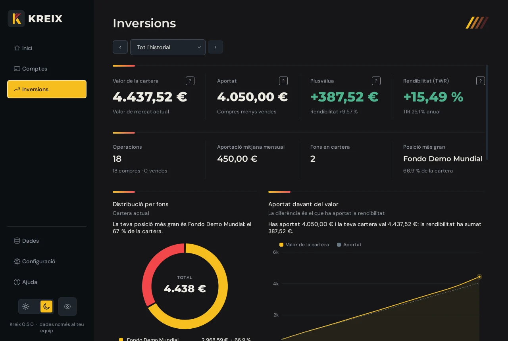
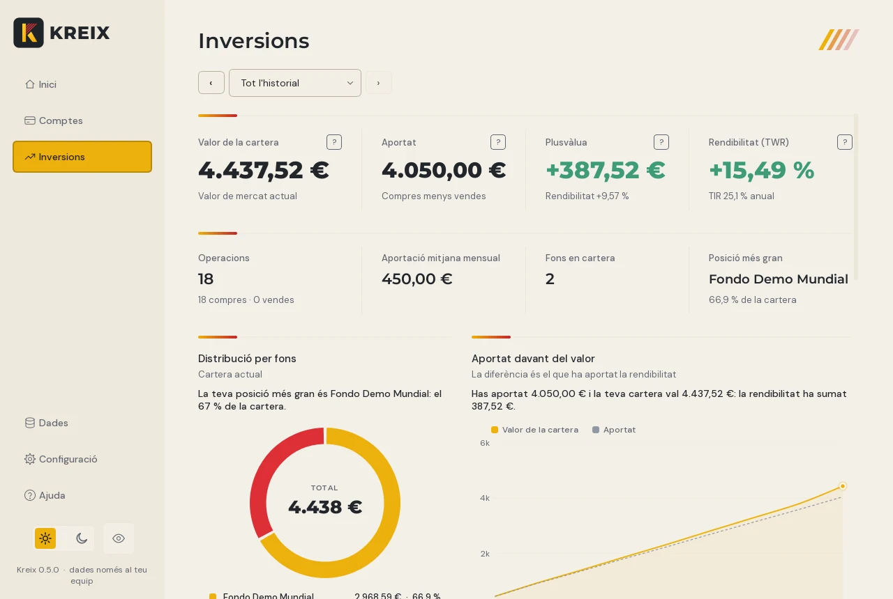
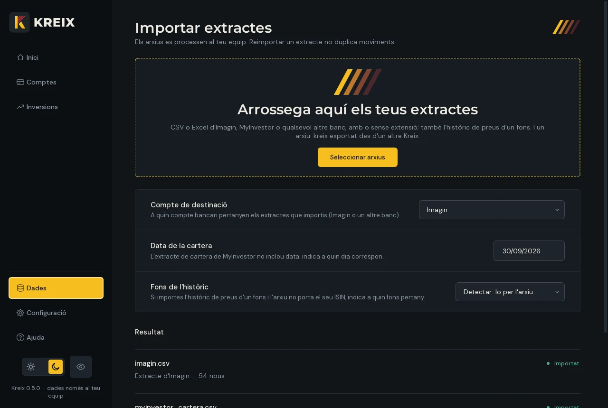
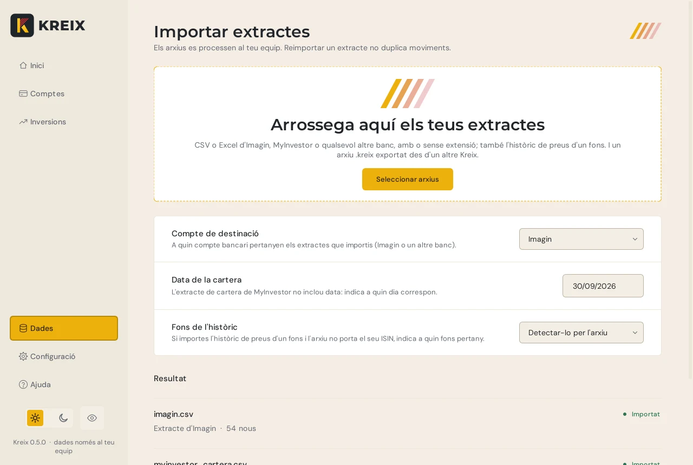
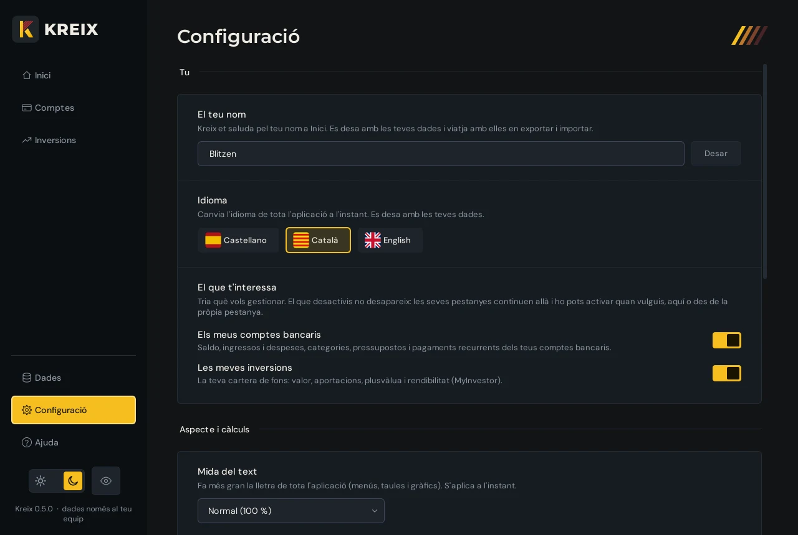
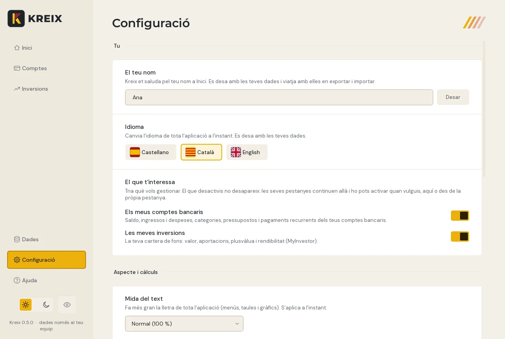

Kreix mai no et demana les claus del teu banc.
L'app de finances personals per a Windows que no et vigila: funciona sense connexió i ho guarda tot xifrat al teu ordinador.
La descàrrega arribarà aviat a aquesta mateixa pàgina.
Sense les claus del teu banc
Tu descarregues l'extracte i el deixes anar a Kreix. Kreix mai no entra a la teva banca ni guarda les teves claus.
100 % sense connexió
No es connecta a internet: ni per actualitzar-se ni per enviar res. Sense compte, sense núvol, sense anuncis i sense telemetria.
Les teves dades, xifrades
Tot el que guarda Kreix va xifrat amb la teva contrasenya mestra. Sense ella, ningú ho pot llegir, tampoc nosaltres. L'exportació també es pot xifrar.


Per què Kreix
Quatre decisions de disseny, i cap no és negociable.
No et vigila
Sense compte, sense núvol i sense telemetria. Ningú sap quant guanyes ni en què ho gastes, ni tan sols nosaltres. Comprova-ho: funciona igual sense internet.
Seguretat sense dreceres
Tot el que guarda va xifrat amb la teva contrasenya mestra. Es desxifra només a la memòria, es bloqueja sol quan no l'uses i, sense la teva contrasenya, no hi ha manera d'obrir-lo.
Els teus diners, a la vista
Patrimoni, estalvi del mes, previsió a final de mes, pressupostos, pagaments recurrents i inversions. Inici ho resumeix tot en una sola pantalla.
Fàcil des del primer minut
Deixes anar l'extracte del teu banc i ja està. Sense enllaçar comptes ni configurar res. Si el teu banc no és a la llista, Kreix et pregunta una vegada quina columna és cada cosa i ho recorda.
Comença en tres passos
Sense enllaçar comptes i sense donar accés a ningú: només un arxiu que ja pots descarregar del teu banc.
-
Descarrega l'extracte
Des del web o l'app del teu banc, en CSV o Excel. És el mateix arxiu que baixaries per guardar-lo.
-
Deixa'l anar a Kreix
Arrossega'l a Importar. Kreix et mostra el que ha llegit i no guarda res fins que premis Importar. Si repeteixes un extracte, no duplica moviments.
-
Mira els teus diners
Inici resumeix el teu patrimoni, el teu estalvi del mes i el que ha de venir. Comptes i Inversions ho detallen.
La guia, pantalla a pantalla
Cada pestanya de la barra lateral, en poques paraules. Les dades de les captures són inventades.
Tot l'important d'un cop d'ull
- El teu patrimoni net, la rendibilitat i la taxa d'estalvi del mes.
- Una previsió de quants diners tindràs a final de mes, amb els teus pagaments fixos.
- Pròxims pagaments, pressupostos i els moviments que encara no tenen categoria.
Les teves despeses, clares
- Despeses per categoria i evolució del saldo, d'un mes o de tot l'historial.
- Canvia la categoria d'un moviment amb clic dret, o crea les teves pròpies regles.
- Pressupostos per categoria i pagaments recurrents detectats.


La teva cartera de fons
- Valor de la cartera, l'aportat, la plusvàlua i la rendibilitat.
- Distribució per fons i evolució respecte al que has aportat.
- S'alimenta de les operacions i la cartera que exportes de MyInvestor.


Deixar anar i revisar
- Arrossega els CSV o Excel del teu banc a la zona d'importació.
- Veus què s'ha llegit abans de guardar, i gairebé tot es pot desfer.
- Si Kreix no reconeix l'arxiu, et pregunta quina columna és cada cosa i ho recorda.


A la teva manera
- Castellà, català o anglès, amb canvi a l'instant.
- Tema clar o fosc, mida del text i cel animat a Inici.
- Contrasenya, bloqueig automàtic i còpies de seguretat xifrades.


Un ull per a quan et miren per sobre l'espatlla
Amb un clic, o amb Ctrl+H, Kreix difumina totes les quantitats: en xifres, taules i gràfics. Es nota que hi ha un número, però no quin. Prova-ho.
Categories automàtiques
Kreix classifica les teves despeses tot sol, i les teves regles manen sobre les seves.
Pagaments recurrents
Detecta subscripcions i rebuts, i et diu quan toca el següent. Treus els que ja no pagues.
Gairebé tot es pot desfer
Cada canvi important mostra un avís amb el botó Desfer.
Les teves dades no surten del teu ordinador
No cal refiar-se d'una promesa: Kreix està fet perquè no tingui res a enviar ni on enviar-ho.
-
Sense xarxa
Kreix no inclou funcions de connexió a internet: ni per actualitzar-se, ni per enviar dades, ni per mesurar com l'uses.
-
Xifratge de debò
Les dades es xifren amb AES i una clau que surt de la teva contrasenya (PBKDF2-SHA256 amb 600.000 iteracions). Si algú manipula l'arxiu, deixa d'obrir-se.
-
Res en clar al disc
En obrir Kreix, les teves dades es desxifren només a la memòria. No s'escriuen arxius temporals sense xifrar.
-
La contrasenya és només teva
Ningú més la té. Per això, si l'oblides, tampoc es pot recuperar res: hauries de començar de zero.
Comprova-ho tu
- Desconnecta el wifi o el cable de xarxa.
- Obre Kreix i fes-lo servir amb normalitat: importa, mira els teus gràfics, canvia categories. Tot funciona igual, perquè mai no ha necessitat connexió.
Per a més garanties, crea al Tallafoc de Windows una regla de sortida que bloquegi Kreix i comprova que continua funcionant.
Què convé saber
L'arxiu que crea Exportar (.kreix) es pot xifrar amb la teva contrasenya, però no és obligatori. Si no el xifres, guarda'l en un lloc segur. I apunta la teva contrasenya mestra en un lloc segur: si la perds, no hi ha manera de recuperar les teves dades.
Funciona amb el teu banc
Kreix llegeix CSV i Excel (.xlsx i l'antic .xls). Reconeix aquests formats per les seves columnes habituals.
- Imagin
- MyInvestor
- CaixaBank
- Santander
- Revolut
- Trade Republic
- Qualsevol altre
Si Kreix no reconeix un arxiu, et mostra les primeres files i et pregunta quina columna és la data, el concepte i l'import. Ho recorda per a la propera vegada. Els formats de CaixaBank, Santander, Revolut i Trade Republic estan inclosos, però encara en proves.
Preguntes freqüents
Necessita Kreix les meves claus o accés al meu banc?
No, mai. Kreix no es connecta al teu banc. Treballa amb els extractes que descarregues tu.
Es connecta a internet?
No. Funciona exactament igual sense connexió, i no inclou res per enviar informació fora del teu ordinador.
On es guarden les meves dades?
En un arxiu xifrat dins de la teva carpeta de dades d'aplicació (a Windows, %APPDATA%\Kreix). Només es desxifren a la memòria mentre Kreix està obert.
Què passa si oblido la contrasenya?
No es pot recuperar: no hi ha cap clau de recanvi, i per això ningú més pot llegir les teves dades. Podràs començar de zero amb una contrasenya nova. Guarda còpies de seguretat i apunta la contrasenya en un lloc segur.
Què passa si importo dues vegades el mateix extracte?
Res: Kreix reconeix els moviments que ja té i no els duplica.
Puc endur-me les meves dades a un altre ordinador?
Sí. Exportar crea un arxiu .kreix que deixes anar a Importar a l'altre equip. El pots xifrar amb la teva contrasenya. Importar-lo substitueix les dades que hi hagués.
Puc desfer un canvi?
Gairebé tots els canvis importants mostren un avís amb el botó Desfer: importar, canviar categories, crear regles, pressupostos i esborrats.
En quins idiomes està?
Castellà, català i anglès. S'escull la primera vegada que l'obres i es canvia quan vulguis a Configuració.
Funciona en Mac o al mòbil?
Per ara, només a Windows. Una versió per al mòbil està en estudi.
Quan es podrà descarregar?
Aviat. Aquesta pàgina serà el lloc de descàrrega i continuarà sent la guia.
Els teus diners, el teu ordinador, les teves regles.
Kreix per a Windows arribarà aviat a aquesta pàgina, que continuarà sent la guia. Sense compte, sense registre i sense connexió.
Descàrrega per a Windows: aviat